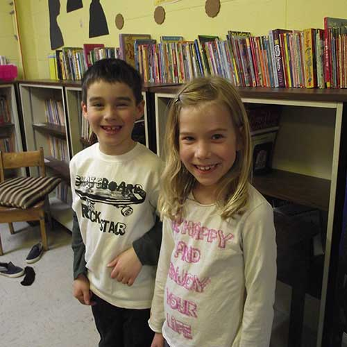

Foundational Programs
- At Martello we create a strong foundation for children to build on
- Math, Science, English and Geography.... we lay the groundwork for our students enabling them to become self-directed, independent life long learners
- Children who master whole numbers and geometric concepts at an early age are better equpped to master more complex math concepts as they are presented

Specialty Programs
- Martello offers a comprehensive French program including written and verbal skills
- Our Physical Education program includes regular partipation in team sports games and activities, and is directed by a physical education specialist

Field Trips and Special Guests
- Martello School plans yearly local and regional field trips for all classes
- These have included tours of historical sites such as the Murney Tower, Fort Henry, Upper Canada Village, and many more
- Martello also invites local professionals and groups such as the Queens Science Quest and the 1000 Islands Young Theatre Production Company to visit and share their skills and enthusiasm with our students
Foundational Programs



Specialty Programs
Field Trips and Special Guests